Scythe Valkyrie — profile-B scythe fixes on both wallpaper golds
📖 Round runbook →Round 5 rebuilds each wallpaper's scythe blade to the approved profile-B arc — and straightens W1's bowed haft — across eight repair mechanisms plus a cross-model challenger, so the mechanism evidence generalizes from r4's wing removal to the harder reshape-to-target task.
r5-w2-blankboxg-comp-1 — Jake, "is great, just needs to remove dagger from hand"; that dagger-removal pass is the round's single carried change. W1: the two D′xg rolls, -comp-1 and -comp-2, Jake naming both. Asked if anything else was outstanding: "That's it / I'm very happy otherwise." Mechanism finding: guide-conditioned blanking (D′xg) is adopted. Jake — "it really struggled with the angles and the best results came from the explicit guidelines"; Dimitri — "the guide strat seems best". This does not extend r4's A-first ranking, it qualifies it: on W2 every Flash arm including mechanism A was a no-op, reproducing the old sabre to within a few pixels, and only the deferred Riverflow challenger repaired it. All 34 paid calls landed for $2.3778 of the $5.50 cap, with 34 crop audits and one two-wave blind run (0 degraded, 0 failed) on the exact same 34. Two guide-residue FAILs were overturned as over-strict-check — the screen measured re-render speculars, not drawn marks, and is retired.Verdicts — answered (round closed 2026-08-21)
Jake and Dimitri closed the round on Discord, 2026-08-17, ratified 2026-08-21. Verbatim capture in notes/r5-feedback-raw-2026-08-17-jake-dimitri.md and its 2026-08-21 attribution correction; structured records in reviews.jsonl and round-feedback.jsonl.
- Per wallpaper: adopt, pick a mechanism for a follow-up, or reject?Answered — Jake + Dimitri
BOTH ADOPTED. W2 = r5-w2-blankboxg-comp-1 pending one dagger-removal pass. W1 = the two D′xg rolls, with Jake naming roll 2 for its regenerated background towers and roll 1 overall. Dimitri ratified the W2 pick over three severe audit findings in the restored box, not disputing the observations but judging them unimportant at wallpaper viewing size.
- Does r4's A-first ranking hold for reshape-to-target, and do C′/D′ redeem themselves?Answered — Jake + Dimitri
No, and yes. D′xg — the blank-and-restore variant with the drawn in-blank guide — is adopted as the first-choice mechanism for reshape work. The blank family that failed outright in r4 produced every keeper here once built on Dimitri's hand-painted masks. Mechanism A was a no-op on W2 entirely.
- Does the Riverflow challenger earn a place in the toolkit?Answered — neither human selected it
It was the only arm that repaired W2 at all, removing the old sabre cleanly, but its blade came back under-curved and at 720×1280. It stays available as a cross-model fallback rather than a default.
Core inputs — the base image(s) these candidates were built from


W1 — controls and the full-frame arms (A, B)
A is r4's adopted whole-picture edit, now applied to the harder reshape task; B is r4's close second, describing the whole picture instead of using surgical wording. Both carry W1's straight-haft ask, with the re-angled axis passing through her unchanged grip so no hand or arm needed re-posing.

Control · untouched W1 gold
~$0.05BASE INPUTRecommendation: BASE INPUT — the ratified round 4 gold
Review priorities
Machine diagnostics
4 more detectors (8 total)
The unedited 1376×3058 W1 gold every W1 candidate is compared against.
full note
Dimitri ratifies Jake's proposal: 'A1 is the pick of the bunch; let's consider it the W1 gold for now.' Whole-picture edit (A) is the adopted mechanism (slight margin over B). Known cost: some bottom-half repaint/blur, judged acceptable, with a re-sharpen pass from the original image model queued as a future experiment. The scythe remains the next fix. Dimitri's formal r4 ruling, in-session 2026-08-15 after reviewing the republished panel; verbatim capture notes/r4-feedback-raw-2026-08-15-dimitri-3.md.
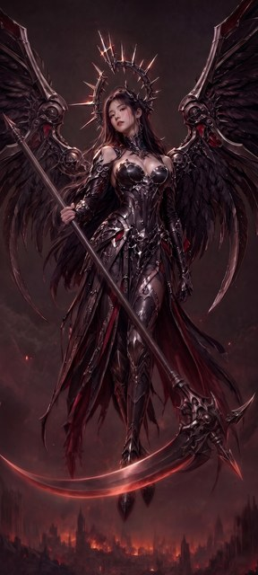
A · whole-picture edit · roll 1
~$0.05FIXABLEAI recommendation: FIXABLE — blade contract materially met (one blade, low socket, straight haft, unchanged grip, no old-crescent remnant), but the arc is ~80 deg deep vs the ~50 deg spec, the tip finishes ~40 deg above horizontal at the left border, and the blade now crosses in front of her boots
Machine diagnostics
7 more detectors (13 total)
One smooth left-sweeping blade, dead-straight haft, unchanged grip, no old-crescent remnant; but arc ~80 deg vs ~50 spec and it crosses her boots.
full note
Crops written to /tmp and read back at 2-6x: ornate head and blade launch, full sweep with a coordinate grid, tip at 4x, right-of-head region plus a 4x look at the counter-horn, grip at 5x and left gauntlet, counterweight at 6x, legs/boots, and face/wings/city/top-band comparisons — each against the identical gold crop, plus a numeric ridge trace of the blade, a robust line fit of the haft, and a gaussian high-pass of the lower band to hunt ghost arcs. Matched: every hard failure condition avoided — one long blade sweeping viewer-left, launched low roughly perpendicular to the haft, background both sides, no trace of the old deep crescent and no blade mass hooking around the right of the head (only a ~160px counter-horn); the haft is now dead straight (rms 1.6px, sagitta 2.8px over 1300px) with the counterweight shortened and inside the frame; grip, hands, arms, face, crown, armour, wings, city and framing preserved. Not matched: arc ~80-85 deg rather than ~50, tip finishing ~40 deg above horizontal into the left border; the scythe head rebuilt ~125px left of its gold position rather than merely re-socketed; the blade crossing in front of her boots; and a slightly softer render with fewer embers. Anatomy intact and the blade contract materially met, so FIXABLE rather than REJECT; the off-spec arc depth keeps it short of KEEPER-CANDIDATE.
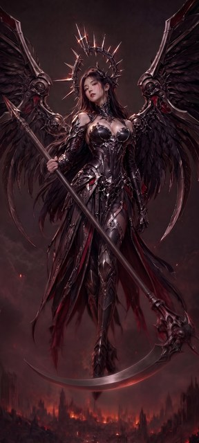
A · whole-picture edit · roll 2
~$0.05FIXABLEAI recommendation: FIXABLE — blade contract materially met (single low-socket blade, no old-crescent remnant, straight haft, intact grip), but the arc is ~80 deg vs the ~50 deg spec and the boots/city band lost detail
Machine diagnostics
8 more detectors (13 total)
One clean blade on a now-straight haft, no old-crescent trace; arc deeper than spec (~80 deg) and boots/city noticeably softened.
full note
Cropped and 2x-upscaled: scythe head and socket, the whole blade sweep with a coordinate grid, the left tip zone, the grip and hand, the arm, the haft in two segments plus a numeric specular-ridge trace, the upper-haft finial, face and crown, wings, legs and boots and the city band, each against the identical gold crop. Against the W1 gold the repair lands: exactly one long blade leaves the head low at (1250,2420) roughly perpendicular to the haft (82 deg), sweeps left in one smooth single-radius arc and finishes at (168,2470), level with its socket, with clear background between it and both wings; the gold's deep near-half-circle below the boots is entirely gone with no ghosting or fill patch; the haft is genuinely straight (line-fit residuals +/-8px vs the gold's +/-40px bow) and the pole above the hand is shortened with its counterweight finial inside the frame; hand, arm, face, hair, crown and both wings preserved with only sub-1% re-render drift. Differing: the arc carries ~80 deg of total curvature instead of ~50 (still far shallower than the gold's ~134, and not a hook); the head ornament is re-rendered slightly simpler with the gold's red right-hand fin replaced by a plain spike; and the lower third is measurably softer — boots and burning city both at ~0.35 of the gold's local detail energy — with a faint translucent boot-tip remnant trailing below the blade at (640-700,2695-2790).
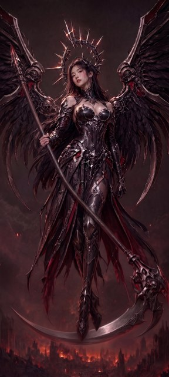
B · steered regeneration · roll 1
~$0.05REJECTAI recommendation: REJECT — haft still bows exactly as in the gold (straightening not done) and the new blade is a ~83-degree crescent, not the specified ~50-degree shallow arc; anatomy is intact
Machine diagnostics
7 more detectors (13 total)
One clean new blade, low perpendicular socket, no old-blade ghost — but the arc is still deep (~83 deg) and the haft was never straightened.
full note
Cropped and 2-6x upscaled: the scythe head and blade launch, the whole blade sweep with a 100px coordinate grid, the blade tip, the old-blade corridor at +2.3 brightness, the upper grip at 6x, the right forearm, the left arm, face and crown, both wing roots, the city band, and a shear-rectified haft corridor with a straight reference chord. Matching the gold: the ornate skull-and-blade head, both wings, face, armour, cloth, framing and the ruined-city skyline; arms anatomically sound with one well-formed five-fingered upper grip. Genuinely improved: the old thin glowing near-half-circle is gone with no ghosting, replaced by a single broad blade leaving a low socket almost exactly perpendicular to the haft and ending in a clean tip well clear of both wings. Not matched: the new arc is still deep — about 83 degrees of total curvature with a tip rising ~47 degrees against the ~50 the contract specifies — so it still reads as a crescent slung under her boots; and the haft-straightening requirement was not met at all, the rectified pole bowing 30-40px off its own chord, the same bow the gold has. The upper pole and counterweight are also untouched rather than shortened and steepened, and the burning city is dimmer than the gold's.
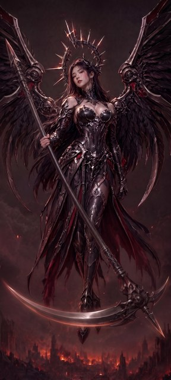
B · steered regeneration · roll 2
~$0.05FIXABLEAI recommendation: FIXABLE — blade contract materially met (one long shallow arc, perpendicular low socket, no remnant, hands unchanged), but the explicitly required STRAIGHT haft was not delivered: the pole still bows ~35-45px off its own chord, tracking the gold's bow almost exactly; head also repositioned/rebuilt
Machine diagnostics
6 more detectors (12 total)
One long shallow blade, perpendicular low socket, no old-crescent remnant, hands intact; but the haft is still bowed ~40px, essentially the gold…
full note
Crops written to /tmp for the scythe head and blade launch, the full sweep with a coordinate grid, the left tip at the frame edge, the blade body, the upper grip, both arms, face/crown, the right wing side, the boots band, and a high-pass pass over the old-crescent path. The blade contract is met: exactly one long blade leaving the head exactly perpendicular to the haft (measured dot 0.00) at a socket ~70% down the head, sweeping left in one smooth arc of ~68 deg total curvature — deeper than the ~50 named but nothing like the old near-half-circle — tip finishing ~210px above the socket at ~27 deg, clear background between blade and both wings. The old deep crescent and the blade section hooking around the right of the head are completely gone; the high-pass check shows clean cityscape with no ghosting. Anatomy clean: two hands, five digits on the visible grip hand, arm proportions matching within ~20px. NOT matched: the haft. Traced pole centres give slopes 0.363, 0.483, 0.57 and a ~35-45px leftward deviation from its own chord at midspan, sitting within ~10px of the gold's bowed pole at every sampled row — the required straight pole was not delivered; the bow was carried down to a lower head. Secondary: ornate head repositioned ~130px left and ~140px down and rebuilt smaller, figure ~40px higher in frame, blade crossing in front of the boots, tip feathering off the left frame edge, and a stray unattached dark filament at (400-445,2575-2670).
W1 — guide-conditioned edit (G)
New mechanism: the approved target is DRAWN on the gold — haft axis, launch point and blade silhouette — so the model is steered by geometry rather than words. W1's guide was synthesized parametrically from the profile-B numbers after the r4 diagram's pixels turned out to encode the old haft angle. A deterministic screen checks no drawn mark survived.
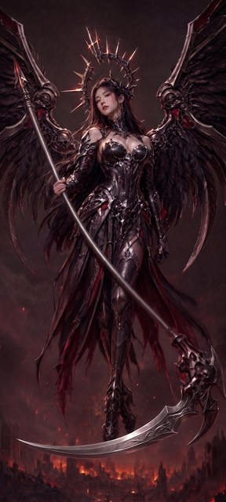
G · guide-conditioned · roll 1
~$0.05FIXABLEAI recommendation: FIXABLE — blade contract fully met and no guide residue, but the haft is still visibly bowed (~115px sagitta), the family's second explicit requirement
Machine diagnostics
12 more detectors (17 total)
Clean single shallow blade, no guide marks, anatomy intact; haft never got straightened — still bows ~115px off the pommel-to-collar line.
full note
Cropped and 2-6x upscaled twelve regions read against identical gold crops: the ornate head, the blade launch/socket, the whole blade sweep, the blade tip at 5x, the region right of the head, the old-crescent region under a 3.2x contrast stretch, the upper grip at 6x, both arms, the hanging right gauntlet, the face and crown, the upper haft with its counterweight, and the lower haft run — plus two 3.5x saturation-boosted full-halves and a numeric cyan/pure-red scan as an independent guide-mark detector. The scythe repair is the strongest part: the gold's deep near-half-circle under her feet is completely gone with no ghosting or flat patch in the restored city, replaced by exactly one silver blade leaving a properly formed filigree socket LOW on a well-preserved ornate head, sweeping left in a smooth ~52 deg arc (tangent -34 deg at socket, +18 deg at tip) to a clean in-frame tip at (101,2671), with clear background between it and both wings. The mandatory no-guide-marking check passes on both an independent colour test (zero cyan-family pixels image-wide, red only where the gold also has embers) and a saturation-boosted visual sweep. Anatomy, face, crown, armour, wings, cloth, city and framing all match within normal re-render drift, and the gripping hand still shows a clean thumb-plus-four-fingers wrap in the same place. What does not match is the haft: a straight line from the pommel (157,589) to the head collar (977,1950) shows the traced pole bowing away by up to ~115px at y~1400, versus ~137px for the gold — only ~15% improvement, so the required straightening effectively did not happen, and correspondingly the section above the hand is slightly longer rather than shorter and steeper. Two lesser deviations: the head's counter-spike is longer and more prominent than the gold's, and the shaft has been re-rendered from dark brown-black to bright polished silver.
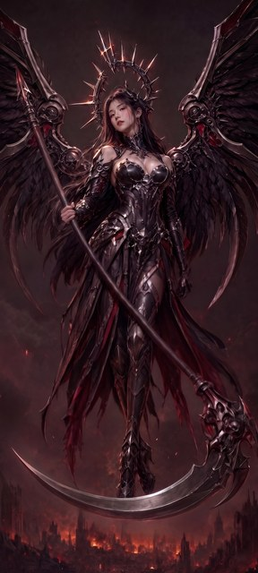
G · guide-conditioned · roll 2
~$0.05FIXABLEAI recommendation: FIXABLE — clean single new blade and no guide residue, but the haft was never straightened and the arc is ~2x deeper than spec
Machine diagnostics
8 more detectors (15 total)
One clean new blade, old crescent fully gone, zero guide marks; but haft still bowed exactly as gold and arc ~100 deg vs 50 deg spec.
full note
Worked through targeted 1.2x-6x crops written to /tmp and read back: scythe head and socket, the full blade sweep against the gold and against the guide overlay, the left tip and the wing/cloth gap, the region the old crescent occupied, both hands at 3.2x-4x, the haft with a fixed straight chord drawn identically on both images, face and crown, right arm, boots, and top/bottom frame strips. Guide residue is clean by three independent detectors that each demonstrably fire on the guide input: zero cyan pixels, zero pure-red pixels, no thin white diagram stroke. The blade itself is well made — exactly one long, smooth, consistently curved arc emerging low on a preserved ornate head, sweeping left with clear background between it and both wings, and the old glowing near-half-circle completely and cleanly erased with the city and haze restored behind it. Two contract items miss. First and worst, the haft was never straightened: overlaying the same chord on gold and candidate puts the pole in the same bowed position (~100px of sag at mid-span) in both, and the counterweight above the hand is unmoved, so the whole straight-pole half of the W1 ask is unperformed. Second, the new arc is about twice as deep as specified — ~101 deg subtended at r=643 versus the guide's own drawn 49.1 deg at r=1220 — and its tip finishes ~91px above the socket, rising at ~31 deg rather than near horizontal. Everything else matches the gold with only regeneration-scale drift.
W1 — crop and blank family (C′, D′m, D′h, D′x, D′xg)
Every card here edited a deterministic scythe-region crop and was pasted back into the untouched gold at rect (0,1900)-(1376,3058), verified to change zero pixels outside it — so nothing above the band can have moved, and the upper haft is out of scope by construction. The D′ variants all build on the blade mask Dimitri painted himself.
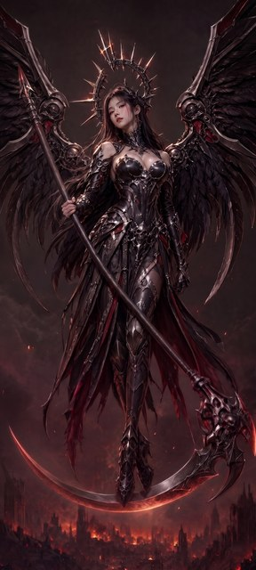
C′ · crop edit · roll 1
REJECTAI recommendation: REJECT — the blade still traces the old deep crescent below her feet (~105 deg of total curvature) instead of the required shallow ~50 deg arc
Machine diagnostics
5 more detectors (12 total)
Blade retraces the old deep crescent under her boots (~105 deg curvature, not ~50); seam, boots, fringe, head and city are preserved.
full note
Scratch isolation: first crop pass used generic /tmp names and returned W2 grey-blue moonlit content on this W1 job, so every crop was re-cut under a private /tmp/aud_w1cc1 directory and all findings come from that clean pass. Mechanical check first: rows 0-1899 byte-identical to the gold, first changed row 1903, so only the band was graded. Cropped and 2x-upscaled the seam at y=1900 (two halves plus a 3x pass where cloth crosses), the scythe head and socket, the blade tip and left band, the boots, the fringe, the vacated old-blade region and the lower background, and traced the blade's lit edge numerically by column. Matching the gold: the seam is invisible visually and numerically; boots, leg armour, fringe tatters, the head's silhouette/collar/right flare and the burning city are preserved and pixel-aligned; the vacated region is refilled with plausible skyline and haze. Failing the contract: the blade is still the old deep crescent, turning ~105 degrees end to end against the ~50 the contract calls for, its belly still passing below her boots, tip finishing ~240px above the socket while still climbing. The candidate did genuinely improve things — a real low socket, a solid metal body, and a clean in-frame tip instead of running off the left edge — but geometrically it re-rendered the old crescent rather than replacing it. Minor secondary: counter-spike stretched into a thin ~260px hooked sickle, a new crescent notch at the socket, softened skull face detail, and inconsistent boot depths against the blade.
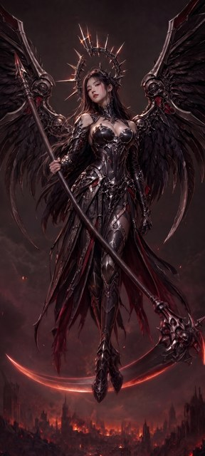
C′ · crop edit · roll 2
FIXABLEAI recommendation: FIXABLE — blade contract met cleanly inside the band; only defects are a small unrequested hooked spike added at the head's right edge (frame-clipped) and a slight band-wide warm tone lift
Machine diagnostics
10 more detectors (14 total)
One clean shallow blade (~60 deg) from a low socket, tip slightly above horizontal, old crescent fully gone; small added hook at head's right edge.
full note
Confirmed mechanically first that everything above y=1900 is byte-identical (max channel diff 0 through row 1900, first non-zero at 1901), then graded only the pasted band. Cropped and 1.6-6x upscaled the head and blade launch, the right-of-head region, the blade body left and right of the boots, the tip, two seam strips spanning y=1900, the boots, the fringe, the old-crescent footprint, and the lower city — always against the identical gold crop. The scythe now carries exactly ONE long blade: it leaves a properly seated socket low on the head at ~(1182,2430) at 87 degrees to the haft, sweeps left in a smooth monotone arc with a nadir of y=2626 at x~575, and finishes in a clean taper at ~(31,2373), slightly above the socket — about 59-64 degrees of total turning, i.e. shallow, no hook and no half-circle. What looked at first like a doubled arc resolved under a brightness profile as one blade with a bevel line between its spine highlight and its glowing edge. The gold's deep crescent (nadir y=2884, running off the upper-left edge) is completely gone with no ghosting, and the burning city underneath it is restored plausibly and continuously. Boots, leg armour, cloth fringes, haft collar and the skull core all match the gold shape-for-shape (figure-region tile diff ~5, tone only), and the seam blends over ~60 rows with no visible step. Two things do not match: a new forked counter-spike ornament painted into what was plain background at ~(1320-1376,2130-2200), clipped by the right frame edge, alongside a slightly re-profiled head right edge; and the whole band lifted ~3-5/255 warmer than the gold.
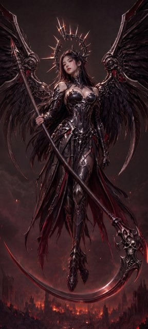
D′m · minimal blank · roll 1
REJECTAI recommendation: REJECT - the single long blade is still a deep near-half-circle sweeping under the boots with its tip curling steeply upward at the left frame edge, so the shared blade contract fails even though the rebuilt head, fill and preservation are clean
Machine diagnostics
9 more detectors (14 total)
New blade redrawn in place along the old deep crescent: ~100 deg U under the boots, tip up ~54 deg at left edge; rest is clean.
full note
Audited in the private scratch directory /tmp/r5aud-scythe-valkyrie-r5-w1-blankmin-comp-1/ (crops full_cand/gold, diffmask, band, head, socket, rightflank, midleft, boots, upperleft, lefttipzoom, lowerleft, haftseam, each written at 1.3-2.4x and read back against the identical crop of the gold r4-w1-ff-1). Mechanically, containment is clean: every row above y=1900 is byte-identical to the gold, the paste seam at y=1900 is feathered and invisible, and the only band-wide deviation is an imperceptible tonal shift (mean abs 2.4-2.7/255). The minimal-blank family expectations that pass are the ones about rebuilding: a compact, legible skull-and-blade head now sits at the haft's collar, the blade leaves it low and roughly perpendicular to the haft, the boots, leg armour, cloth fringes and burning-city background are preserved, and the old glowing crescent's former path is filled with plausible haze and city detail with no ghosting or flat patches. The shared blade contract, however, fails: the new blade was repainted essentially on top of the old crescent's path (per-column change bands are single and thin, so no large relocation occurred), giving a traced centreline of tip (20,2257) -> (320,2596) -> lowest (800,2768) -> socket (~1050,2610). That is roughly 100 degrees of total turning across a 1100x510px deep U passing under the boots, with the tip curling up-left at about 54 degrees above horizontal at the frame edge - a near-half-circle and a surviving instance of the W1 deep crescent, not the required shallow ~50 degree arc finishing near horizontal. Anatomy is untouched (hands and arms lie outside the editable band) and there is no blade doubling, but because the blade geometry itself is the failure the call is REJECT.
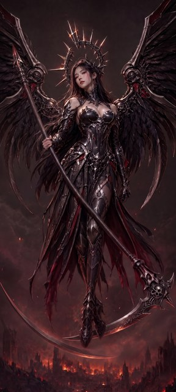
D′m · minimal blank · roll 2
REJECTAI recommendation: REJECT — two long blade arcs: a good new blade off the rebuilt head PLUS a full deep near-half-circle retracing the old blade's path
Machine diagnostics
10 more detectors (14 total)
Rebuilt head and new shallow blade are clean, but a second long deep-crescent blade still spans the lower frame on the old blade's path.
full note
Confirmed the edit region first: rows 0-1899 byte-identical to the gold, first changed row 1906. Cropped and 1.6-2.6x upscaled the head/collar, the blade launch and socket, the boots and their occlusion, the left frame where the old crescent entered, the lower arc band, the cleared right region and the y=1900 seam, comparing each against the same gold crop, plus a gridded overlay of the whole band to read coordinates. Most of the family contract passes: the compact rebuilt skull-and-blade head sits correctly at the haft's collar, the new blade leaves it low at a proper socket and sweeps left in one smooth shallow ~30-35 deg arc that stays clear of both wings and passes behind the intact boots, the background where the old blade's right limb ran is filled with convincing smoke and burning city with no ghosting or flat patches, and the seam, fringes, boots and skyline are preserved. The failure is blade doubling: a second full-length blade — pointed tip at ~(5,2205), metallic lit body, tapering to a point at ~(930,2777) — sweeps a deep near-half-circle across the whole lower frame, and column-by-column its path sits within ~15px of the gold's old crescent at x=100/200/400/700, i.e. the old deep crescent repainted in place rather than removed. That is both a second long arc alongside the main blade and the explicitly named old-crescent remnant, so the shared blade contract fails.
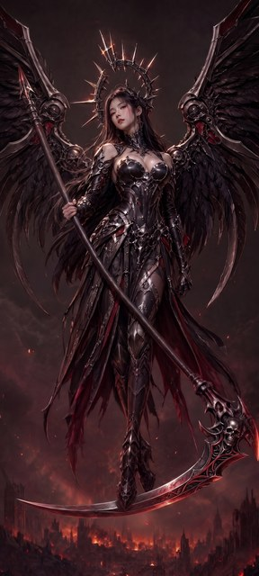
D′h · source+destination blank · roll 1
FIXABLEAI recommendation: FIXABLE - blade contract fully met and the old deep crescent is cleanly gone, but the new blade's occlusion order against the two boots is inconsistent and the right boot's pointed toe is lost behind it
Machine diagnostics
12 more detectors (16 total)
One shallow left-sweeping blade off a rebuilt skull head, old crescent gone, fill seamless; blade occludes right boot toe yet passes behind left boot.
full note
Audited in the private scratch directory /tmp/r5aud-scythe-valkyrie-r5-w1-blank-comp-1/ (full-frame context pair, then 1.45x-5x crops of the head/socket, the whole blade sweep, the tip, both boots, the cloth fringe, the y=1900 seam, and every part of the old crescent's former path, each compared against the identical crop of the gold r4-w1-ff-1). Containment was verified independently with numpy: rows 0-1899 are byte-identical to the gold, so all change lies inside (0,1900)-(1376,3058). Inside that band the blank-restore reads as finished artwork: the old deep crescent is entirely gone with the burning city, haze and embers restored to match the gold, the y=1900 seam is invisible, and nothing was invented. The required rebuilt head is present and compact at the haft's collar with a clearly legible skull, and a single long blade leaves its socket low, sweeping to the viewer's left in one smooth shallow arc of roughly 50 degrees to a sharp tip at (93,2648) that finishes just above horizontal; the down-right flare off the head is a short counter-ornament, not a second arc. The defects are preservation-side and confined to the boots and cloth: the new blade passes behind the left boot but in front of the right one, hiding the last ~40 px of the right boot's pointed toe that the gold shows at (786,2651), an occlusion-order inconsistency visible at 3x-5x; the cloth tatters were repainted with minor tip and tone drift. Blade contract materially met, so FIXABLE rather than KEEPER-CANDIDATE.
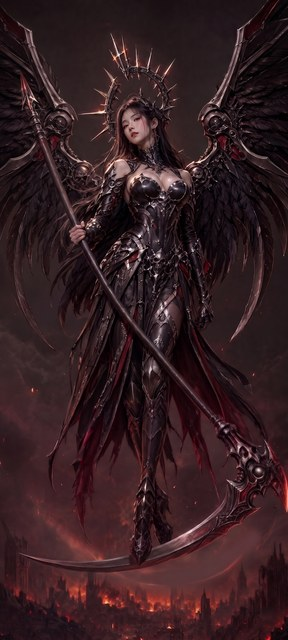
D′h · source+destination blank · roll 2
FIXABLEAI recommendation: FIXABLE - the new blade, rebuilt compact head and all preserved islands meet the W1 blank-restore contract, but the restored band still carries a clearly visible ghost of the old deep crescent (a soft, flat, rim-lit arc under the boots), which needs repainting before this could be a keeper
Machine diagnostics
12 more detectors (16 total)
New blade and rebuilt head meet the W1 contract, but a pale ghost crescent of the old blade still arcs under the boots across the city.
full note
Audited in the private scratch directory /tmp/r5aud-scythe-valkyrie-r5-w1-blank-comp-2/ (cand_full/gold_full, head, bladeR, bladeM, tipL, lowerL, boots, bootblade, headR, farL, seam, bottom, ghost and contrast-stretched band crops, each 2x upscaled and compared against the identical crop of the gold scythe-valkyrie-r4-w1-ff-1.jpg). Containment is independently confirmed: every pixel above y=1900 is bit-identical to the gold and all differences fall inside (0,1900)-(1376,3058). Inside the band the candidate does most of what the W1 blank-restore contract asks: one long blade leaves a low socket on a compact, clearly rebuilt skull-and-blade head at the haft's collar, sweeps left in a single smooth shallow arc and finishes near horizontal at (95,2650), fully separated from both wings, with no second long arc; the boots, leg armour, cloth fringes and burning-city skyline are preserved and the seam and fill tone are invisible (background means within ~3/255 of the gold). The one substantial defect is a residual trace of the old blade: a soft, rim-lit crescent following the old deep half-circle below the boots, through roughly (1250,2565), (1050,2735) and (800,2790), whose interior is flatter and less detailed than the surrounding ember haze and which veils the city towers behind it. It is visible without any contrast enhancement at native resolution, so it is graded bad; because the new blade contract is materially met and no anatomy is broken, the call is FIXABLE rather than REJECT.
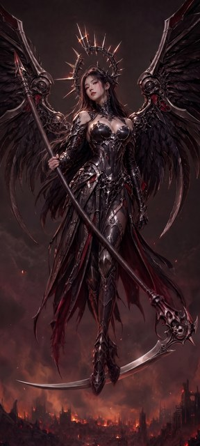
D′x · box blank · roll 1
FIXABLEAI recommendation: FIXABLE - blade contract fully met with a clean rebuilt head; only minor cosmetic deviations inside the restored band
Machine diagnostics
11 more detectors (16 total)
One smooth shallow blade from a compact rebuilt skull head, old crescent gone; minor cloth-fringe trimming and a repainted skyline.
full note
Scratch directory: /tmp/r5aud-scythe-valkyrie-r5-w1-blankbox-comp-1/ (all crops written there: full_/band_, head_, launch_, socket_, cross_, tip_, bladeL_, bladeM_, boots_, seamL_, seamR_, leftband_, midband_, ribbon_, streamer_, rightside_, lowerright_, roofshape_, plus diffmask.png). The edit is provably contained: every pixel above y=1901 is identical to the gold, so grading was confined to the (0,1900)-(1376,3058) rectangle. Inside it the candidate satisfies the shared blade contract - a single long blade leaves a compact, correctly rebuilt skull-and-blade head at the end of the haft's collar, sweeps left in one smooth shallow arc (~35-40 deg of total turn, belly at y~2648) and finishes with the tip ~10 deg above horizontal at (110,2603), with clear background between blade and both wings. The old deep crescent below the boots and the old blade's hook right of the head are gone without ghosting, glow residue or soft blank edges, and the preserved islands (boots, leg armour, haft through the seam, left-side cloth fringes) are byte-preserved and blend into the restored surroundings with no visible boundary. Deviations, all minor and cosmetic: the blade leaves the socket at ~124 deg to the haft rather than ~90 deg; the cloth strands at x955-1000 end 50-95 px higher than in the gold; the skyline and haze behind the old blade are repainted with new (plausible, textured, non-flat) structures and read slightly brighter than the gold; and one ambiguous small silhouette sits on a rooftop dome at ~(1200,2775). No anatomy, no doubled blade, no guide markings.
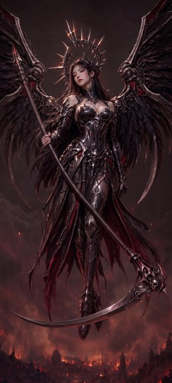
D′x · box blank · roll 2
FIXABLEAI recommendation: FIXABLE - blade contract and rebuilt head fully met; background restoration inside the band drops the gold's left cathedral spire and restyles some cloth fringes
Machine diagnostics
16 more detectors (20 total)
Clean single shallow blade and compact rebuilt skull head; but gold's tall left cathedral spire is gone from the restored city.
full note
Audited in the private scratch directory /tmp/r5aud-scythe-valkyrie-r5-w1-blankbox-comp-2/ (all crops written and read back there at 1.4x-4x). Containment is exact: rows 0-1899 are byte-identical to the gold, so everything graded lies in the (0,1900)-(1376,3058) band. The scythe now meets the shared blade contract cleanly - one long blade leaving a socket low on the head at ~90 degrees to the haft, sweeping left in a single shallow arc of about 51 degrees of total turn and finishing in a sharp tip at ~(90,2475) slightly above horizontal, with clear background between blade and both wings, no hook, no second long arc, and only ornament-scale counter-spike geometry on the head. The W1-required rebuilt head is present and correct: a compact skull-and-flange head at the haft's collar, distinctly smaller than the old ornate blade-hook mass. The old deep crescent is gone with no ghosting, the y=1900 seam is unmeasurable (step 3.85 vs gold 3.86), preserved islands - haft and collar, leg armour, both boots, the left red fringe - connect seamlessly, boots read as preserved with the blade correctly passing in front, and block-variance analysis finds no flat or blurred fill. The one substantive defect is background restoration on the left: the gold's tall gothic cathedral complex at x~0-150, y~2470-2860 is absent, replaced by haze and low rubble, and the lower-right city plus some right-side cloth fringes are redrawn rather than restored. Blade contract and anatomy are sound, so this grades FIXABLE rather than REJECT.
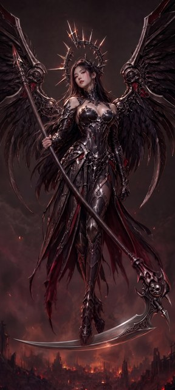
D′xg · box blank + in-blank guide · roll 1
KEEPER-CANDIDATEJake recommendation: KEEPER-CANDIDATE — "I quite like this one overall"
Machine diagnostics
11 more detectors (15 total)
Jake's second W1 pick, liked overall; the towers remark belongs to roll 2, not this card.
full note
Supersedes the earlier record for this artifact, which wrongly folded Jake's "extra towers" remark into this card. His words about THIS artifact are only "and I quite like this one overall" (raw capture line 8). The towers praise belongs to roll 2 per Dimitri's 2026-08-21 correction. This artifact's own crop audit was FIXABLE with a single defect — softened lower city and a re-invented left tower — which remains an open cosmetic question here rather than something Jake has blessed.
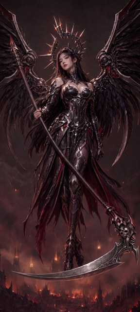
D′xg · box blank + in-blank guide · roll 2
KEEPER-CANDIDATEJake recommendation: KEEPER-CANDIDATE — Jake praised this roll's regenerated background towers
Machine diagnostics
14 more detectors (18 total)
Jake: "the extra towers in the background on this one are super cool" — attached to roll 2, with a screenshot.
full note
Corrected attribution (see notes/r5-feedback-raw-2026-08-21-jake-dimitri-correction.md): Jake's towers remark refers to THIS artifact, D-prime-xg roll 2, not roll 1 as first derived. Dimitri confirmed on 2026-08-21 that Jake attached a screenshot of roll 2 to the post, which did not survive the copy-paste. The praise lands on what this roll's crop audit recorded as a neutral observation — burning-city content inside the blanked area was regenerated rather than reproduced, the gold's gothic building at x230-290,y2400-2800 replaced by different spires with glowing windows. Accurate machine observation, later human aesthetic decision making it desirable: not a verdict overturn under the pipeline rule. This roll was independently the round's cleanest W1 result, KEEPER-CANDIDATE with every family check passing and only two neutral notes.
W2 — controls, full-frame arms (A, B), and the Riverflow challenger (R)
W2's haft is already straight, so these arms carry the blade contract alone: the old sabre rose into the wing feathers, and the new blade must leave a re-formed socket below the skull and sweep gently downward. R reuses the W2-A prompt byte-for-byte through W2's originating model, so only the model varies.

Control · untouched W2 gold
~$0.05BASE INPUTRecommendation: BASE INPUT — the round 3 keeper
Review priorities
Machine diagnostics
3 more detectors (11 total)
The unedited 1536×2730 W2 gold.
full note
Jake's r3 W2 recipe, relayed by Dimitri 2026-08-12: start from this artifact, replace the hand with one free of the dagger shard (as in r3-w2-daggercomp-1 or its intermediate crop), and improve the scythe angle and curvature. The r3 machine REJECT is not disputed on its own terms; the human call values the artifact as a base, not as a finished candidate.
A · whole-picture edit · roll 1
~$0.05REJECTAI recommendation: REJECT — the W2 repair did not take: the old rising sabre is still present, essentially pixel-for-pixel the gold's blade, so the shared blade contract fails on arc, tip height, socket and wing separation
Machine diagnostics
6 more detectors (14 total)
No-op edit: blade is still the gold's long up-left sabre into the wing feathers; everything else preserved but unrepaired.
full note
Cropped and 1.3-4.5x upscaled nine paired regions against the same regions of the W2 gold: scythe head and blade launch, blade tip in the wing feathers, mid-blade at the boot, upper grip, lower hand and dagger, halo and detached spike, face, moon, and upper-right wing. This is effectively a no-op edit: a whole-frame regeneration whose per-pixel diff against the gold is edge-level drift everywhere (mean 5.4/255) with no structural change to the scythe. Column-wise tracing puts the candidate's arc within ~30px of the gold's at every sample from x=100 to x=1300, and the head/socket crop is visually indistinguishable. Every blade-contract check therefore fails exactly as the gold does: still the old long sabre rising up-left from a high socket to a tip ~710px above the head, ~70-85deg of curvature instead of a shallow 50deg, abutting the left wing's feathers from ~(250,1650) to (500,1960) with no separating background. Everything the family says to preserve survived: haft straight, two hands with intact fingers, dagger present, detached halo spike present, ornate skull head kept, framing and full moon matching within a few pixels. Only unrequested changes are low-severity global re-render drift.
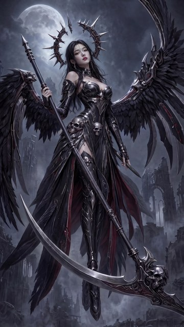
A · whole-picture edit · roll 2
~$0.05REJECTAI recommendation: REJECT — the edit is effectively a no-op: the old rising sabre is fully intact, unchanged from the gold
Machine diagnostics
7 more detectors (15 total)
No repair happened: blade is pixel-for-pixel the gold's old up-left rising sabre, tip ~540px above its socket and crossing the left wing.
full note
Cropped and 2x-upscaled the head/socket, the whole blade sweep, the blade tip and neighbouring wing feathers, the upper grip, the lower hand and dagger, the halo, the face, the boot band and the upper-right wing armature, comparing each against the identical crop of the r3-w2-all-2 gold. Everything that had to be preserved is preserved: framing registers with zero global shift, moon and ruins match, the ornate skull head, both hands, the lower-hand dagger and the detached halo spike are intact, and the haft is still straight. What did not happen is the repair. The blade is the gold's old rising sabre, unchanged: sampled ridge positions across x=200-900 land within 0-9px of the gold, the tip sits at the same (174,1622), and the amplified difference map shows only thin re-encode edge halos rather than moved geometry. Every blade-contract clause the round exists to fix still fails — the arc rises ~540px above its socket toward the upper left, finishes at ~56 degrees rather than near horizontal, crosses in front of the left wing's feathers with no separation, and emerges from the original collar instead of a re-formed socket below the skull.
B · steered regeneration · roll 1
~$0.05REJECTAI recommendation: REJECT — the W2 blade contract fails: the old rising sabre is essentially preserved, the tip still rises far above the ornate head, and no new socket was formed
Machine diagnostics
9 more detectors (15 total)
Blade is the gold rising sabre nearly untouched: spine matches within 2-4px past x=380, tip still ~400px above the head; only the outer tip trimmed.
full note
Scratch isolation: all crops re-cut under a private /tmp/cse_sr1 directory after the shared /tmp showed a name collision with another agent. Cropped the ornate head and socket, blade tip at 2.4x, full sweep, tip-to-mid, leg/boot crossing, both hands (upper at 4x), halo, face, upper haft, right wing armour and lower-left background against identical gold crops. Almost everything preserves the gold: one long blade with a permitted counter-spike, ornate skull head, straight haft, lower-hand dagger, detached halo spike, both hands with correct finger counts, moon, ruins and framing, and the blade does pass in front of leg armour and boot with clear separation from both wings. What does not match is the requested repair: a column-by-column spine trace shows gold and candidate agreeing within 2-4px for every x from 380 to 1105; the only real change is the outer ~180px of tip, lowered 20-95px and shortened ~28px. The socket is untouched and still implies the old upward angle, and the tip still finishes ~400px above the top of its own head. That is the W2 gold's rising sabre with a clipped point, failing the two clauses the brief names. Secondarily the repair was done as a full-frame re-render, costing a mild but measurable amount of fine detail across hair, halo, feathers and ruins.
B · steered regeneration · roll 2
~$0.05REJECTAI recommendation: REJECT — the scythe repair is effectively a no-op: the old rising sabre is fully intact, so the W2 blade contract fails outright
Machine diagnostics
6 more detectors (13 total)
Blade is unchanged from the gold — same rising sabre into the left wing feathers, no new low socket; everything else is preserved.
full note
Cropped and 2-3x upscaled the scythe head and blade launch, the full blade sweep, the blade tip and its wing-feather contact, both hands, the halo, the face, the left-background ruins and the right wing, comparing each against the identical crop of the gold. The blade was not edited: socket, arc, tip position and feather overlap are pixel-comparable to the gold (blade-region mean abs diff 5.5/255), so the old long sabre still rises from the top-left of the ornate head, finishing ~740px above its own socket and crossing into the left wing's feathers with no separation. That fails the shared blade contract and both W2-specific clauses at once. Every preservation check passes: haft straight, both hands clean with the dagger intact, halo spike intact, ornate head intact, face/crown/wings/cloth/moon/ruins/framing matching. Only unrequested changes are whole-image re-render drift. This is a full-frame regeneration that reproduced its input rather than a repair.
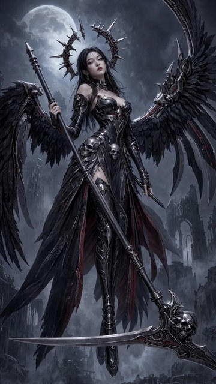
R · Riverflow challenger · roll 1
$0.16FIXABLEAI recommendation: FIXABLE — every enumerated old-sabre failure mode is cleared and the rest of the wallpaper is pixel-preserved, but the new blade is under-curved (~6 deg total vs the ~50 deg specified) and launches ~22 deg off perpendicular; a strict reading of the 50 deg figure would push this to REJECT, so the arc magnitude is flagged bad and left as the human's call
Machine diagnostics
12 more detectors (17 total)
Old rising sabre fully removed and everything else pixel-preserved, but the new blade is near-straight (~6 deg arc) and launches ~22 deg off…
full note
Scratch isolation: crops written into a private /tmp namespace after sibling audits were found overwriting generically named /tmp files; early crops were discarded and redone. Covered the scythe head and blade launch, the full sweep and tip, both hands and the grip, the dagger, the halo, the face, the boot crossing, and the whole corridor where the old sabre used to be, each read against the identically framed gold crop, plus a Gaussian-blurred per-pixel diff against the resized gold to localise every change independently of sharpness. That diff is decisive: only two structures in the entire frame differ, the removed old arc and the single added blade; every other 80px block sits at ~1-3/255. Head, face, hair, halo including its detached spike, both hands, the lower-hand dagger, the straight haft and counterweight, both wings, armour, cloak, moon, ruins and framing are all preserved, and the old rising sabre is gone without ghosting or flat fill. What does not match the contract is the new blade's geometry: traced on a coordinate grid the spine runs from the re-formed socket at (505,1092) to a tip at (30,1128), turning only about 6 degrees where the contract asks for about 50, and leaving the head at roughly 68 degrees to the haft rather than perpendicular. Direction, length, single-arc smoothness, downward drift, separation from both wings, and the pass in front of the boot are all correct — the blade simply reads as a near-straight sabre, and its tip stops only 30px from the left edge.
R · Riverflow challenger · roll 2
$0.16FIXABLEAI recommendation: FIXABLE — blade contract materially met (one low, shallow, downward blade; old sabre cleanly gone; all W2 preservation checks pass), but the blade overlaps the wing's lowest feather tips, the tip finishes below horizontal, and the file is delivered at 720x1280
Machine diagnostics
12 more detectors (17 total)
Single low shallow blade, old rising sabre fully removed with clean restoration; blade grazes lowest wing feathers, tip ends ~18 deg below…
full note
Full-frame W2 edit graded against the W2 gold. Read both full frames, then wrote 2-5x upscaled crops and read them back: the scythe head and socket, the whole blade sweep with a labelled grid, the tip at 4x, the blade/boot crossing, the old sabre corridor, both hands, the head, the face/halo, the detached halo spike, and a straight-line haft overlay; also computed a block difference map against the gold resized to 720x1280. The repair works: the old long sabre that rose into the wing feathers is completely gone, and the cloak, red lining and feather layers it crossed are restored continuously with no ghosting, seams or flat fill. The replacement is a single long blade leaving a socket below the kept skull at ~110 degrees to the haft, sweeping left in one smooth shallow arc (~30-40 degrees total curvature) and passing in front of her leg armour and boot exactly as the W2 contract asks. Everything else matches the gold to within resolution noise. Three factual deviations: the file came back at 720x1280 (expected for Riverflow, not judged as a content fault); the tip finishes about 18 degrees below horizontal and ~70px below the socket rather than levelling near or slightly above horizontal; and near x90-230 the blade crosses in front of the left wing's lowest feather tips, so visible background does not separate blade from wing along that short stretch — depth-correct occlusion rather than fusion, but a literal miss against the separation clause. The blade is also noticeably slimmer than the gold's broad crescent.
W2 — guide-conditioned edit (G)
W2's guide drops the haft axis line entirely — its haft was already straight and the drawn line sat offset from it — leaving the silhouette and launch circle re-anchored down to the actual blade socket.
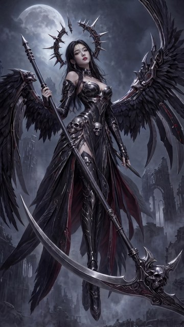
G · guide-conditioned · roll 1
~$0.05PASSAI recommendation: PASS — guide-residue FAIL overturned by Dimitri; no drawn residue present
Machine diagnostics
Dimitri overturned the screen's FAIL on 2026-08-17: the excess is specular re-render brightening, not guide marks.
full note
Reconciliation of the FAST screen against the fresh-context crop audit and against Dimitri's eye. The deterministic screen recorded FAIL; the crop audit recorded no residue; Dimitri reviewed the panel card and the guide input and ruled the detector fundamentally flawed. The blade verdict for this artifact is unaffected and remains REJECT on its own evidence — the old rising sabre is intact to within 1-3px of the gold, which is a separate finding from the residue question.
G · guide-conditioned · roll 2
~$0.05PASSAI recommendation: PASS — guide-residue FAIL overturned by Dimitri; no drawn residue present
Machine diagnostics
Dimitri overturned the screen's FAIL on 2026-08-17: the excess is specular re-render brightening, not guide marks.
full note
Same reconciliation as roll 1. The two rolls failing at near-identical magnitude was itself the tell: it tracked the arm's re-render behaviour rather than anything drawn. The blade verdict is unaffected and remains REJECT on its own evidence.
W2 — crop and blank family (C′, D′m, D′h, D′x, D′xg)
Same construction as W1's family, pasted back at rect (0,1450)-(1536,2730) with zero pixels changed outside it. W2 keeps its skull core, so the test here is whether the new blade leaves a properly re-formed socket below it rather than one still implying the old upward angle.
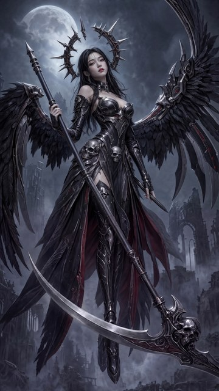
C′ · crop edit · roll 1
REJECTAI recommendation: REJECT — the old rising sabre is retained, merely lowered ~30-140px; blade still launches acutely along the haft and its tip finishes far above the head
Machine diagnostics
7 more detectors (13 total)
Near-null edit: same long up-left sabre, tip ~640px above its socket and above the head; everything else in the band preserved.
full note
Worked the band y1450-2730 with 2x-2.2x crops read back one by one: head and blade launch, blade tip, mid-sweep, the vacated old-blade strip, left wing and tip clearance, boots, lower-left and lower-right background, plus two seam strips and an amplified difference map. The composite mechanics are clean: rows above y=1450 byte-identical, blend ramps softly over y1451-1470, and nothing in the seam, dagger, boots, greaves, leg armour, ornate skull head or ruined-city background reads as broken, ghosted, flattened or invented — the only preservation deltas are cosmetic re-render drift. The blade is where it fails. The amplified diff shows two near-parallel arcs converging at the head, and a traced centreline confirms the candidate blade is the gold's blade lowered by ~30-60px mid-span and 137px at the tip, with socket pixels essentially unchanged. The old long sabre still rises toward the upper left, finishing ~640px above its own socket and ~300px above the head's tallest spike, with a ~55 deg rising tangent at the tip and a launch only ~25 deg off the haft rather than perpendicular. Under the W2 contract that is the named failure mode, so this is a reject, not a fixable.
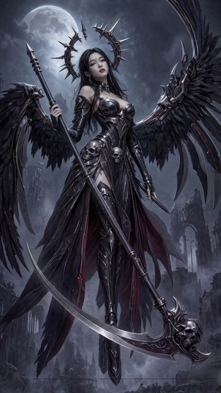
C′ · crop edit · roll 2
REJECTAI recommendation: REJECT — the old rising sabre is still there (repainted, not replaced) and a stray 2px black line crosses the lower background
Machine diagnostics
8 more detectors (16 total)
Blade still launches up-left into the wing feathers ~700px above its socket; plus a hard horizontal line artifact at y=2631 across the lower frame.
full note
Confirmed mechanically that everything above y=1450 is byte-identical, then graded only the band. Crops at 2-3x: the seam in both halves, the haft through the band, the lower hand and dagger, the scythe head and socket, the mid-blade, the blade tip in the wing feathers, the boots, the lower-left background, and the lower-right region where the gold's second blade sat. Preservation is genuinely good: seam invisible and haft edges aligned within 1-2px, dagger intact and continuous across the seam, boots and leg armour faithful, skull head core preserved, background fill plausible. The repair did not happen: the candidate's single long blade still launches from the head's left side and climbs up-left to a tip at (177,1675), roughly 700px above its socket and 350px above the head, ending inside the left wing feathers — the exact W2 failure mode, reproduced rather than removed. Two further factual changes: the gold's long lower-right blade extension off the head has been deleted and painted over with fog and ruins, and a hard 2px black horizontal line runs from x=232 to x=1508 at y=2631 across the entire lower frame, including over the boot tip.
D′m · minimal blank · roll 1
REJECTAI recommendation: REJECT — the new blade re-occupies the old rising sabre's path, so the W2 blade contract is not met
Machine diagnostics
6 more detectors (13 total)
One clean ornate blade and flawless preservation, but it still rises ~780px above the socket into the left wing on the old sabre's path.
full note
Confirmed the composite is honest first: everything above y=1450 byte-identical to the gold, and a red/green difference map localised all change to the scythe. Cropped and 2x-upscaled the head/socket, the far tip, the mid-sweep, the leg crossing, the seam band, the dagger hand and the boots against identical gold crops, plus a contrast-stretched pass over the old blade's corridor. Preservation is excellent: seam invisible (row-step 3.10 in both, difference ramping from 0.00 at y=1450), dagger hand and its five fingers intact, both boots and greaves intact, background ruins and fog tone matched to under 2 L, no ghosting and no flat patches anywhere the old sabre ran, exactly one long blade with the skull core kept. The blade itself is genuinely new work — much thicker, silver scrollwork along its spine, a rebuilt filigreed socket, and it now correctly passes in front of the leg armour. But a per-column ridge trace shows the new blade lies on the old sabre's trajectory: apex at x=200 is y=1694 against the gold's y=1705, i.e. 11px higher than the blade it replaced, deviation elsewhere never exceeding 50px. The tip still finishes at ~(170,1608), roughly 780px above the socket, pointing up at ~58 degrees, buried in the left wing's feathers with no background separating them. The repair re-ornamented the sabre instead of re-aiming it.
D′m · minimal blank · roll 2
REJECTAI recommendation: REJECT — the repaint reproduces the old rising sabre; the blade still climbs above the head into the left wing feathers instead of sweeping downward from a re-formed socket
Machine diagnostics
7 more detectors (14 total)
New blade retraces the old rising sabre: tip at (176,1620) vs gold (177,1620), ~780px above its socket, buried in the left wing feathers.
full note
First confirmed the composite is mechanically clean: outside the (0,1450)-(1536,2730) rectangle the candidate is byte-identical to the gold (0 differing pixels), and the vertical gradient across the y=1450 boundary matches the gold exactly, so there is no seam. Then cropped and 2x-upscaled the head/socket, the blade tip, the mid sweep, the old-sabre corridor, the boots, the bottom-left ruins, the bottom-right head tail and the lower-hand dagger, comparing each against the same gold crop. Preservation is good throughout: skull core, counter-spike, collar, rear tail spike, boots and leg armour, cloak and ruin background, and the lower-hand dagger (above the edit band, therefore untouched) all match. No ghosting, no flat patch, no invented limb, exactly one long blade. The failure is the blade itself: repainted essentially on top of the old rising sabre rather than replaced. Its tip lands at (176,1620) against the gold's (177,1620), roughly 780px above its own socket, sitting among the left wing's feathers with no separating background, and the socket beside the skull launches it upward at the same ~12-14 deg as the gold. Traced bright-edge samples coincide with the gold within a few pixels; the only real changes are a slightly sagged and thickened mid-section, a longer ornate spine, a duller metal finish, and a ~10% loss of local contrast across the re-rendered band.
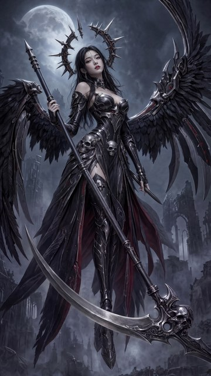
D′h · source+destination blank · roll 1
REJECTAI recommendation: REJECT - the sole blade still follows the OLD rising-sabre path (tip ~(183,1632), ~670px ABOVE the ornate head at ~(1180,2320)), the socket keeps its old upward angle, and no downward-sweeping new blade exists
Machine diagnostics
8 more detectors (16 total)
Restored band is seamless and well-fed, but the blade is the old rising sabre repainted in place - blade contract fails.
full note
Scratch directory: /tmp/r5aud-scythe-valkyrie-r5-w2-blank-comp-1/ (all crops written there via .venv PIL at 1.4-2.0x and read back against identical gold crops). Containment holds exactly - rows 0-1449 are byte-identical to the W2 gold and every difference lies inside (0,1450)-(1536,2730). Inside the band the restoration is technically strong: the y=1450 seam is invisible, the preserved islands (boot, leg armour, haft, skull core, feather fringes) merge seamlessly, the lower hand's dagger and the ruins/fog/cloak read as finished artwork with no flat patches, visible fill tone or invented anatomy. The failure is the blade itself: the single long blade still runs along the OLD rising-sabre path, leaving the head near-horizontally and climbing to a tip at ~(183,1632) roughly 670px ABOVE the ornate head, with the tip tangent ~55-60 deg above horizontal and its upper third laid over the wing/cloak feathers. Per-column ridge tracking puts it within a median 25px of the gold's old blade and its tip within ~10px, and the socket below the skull was never re-formed - it retains the old upward angle. Secondary, neutrally reported unrequested changes: the head's maroon-red inlay is replaced by grey scrollwork, a large circular aperture and a row of barbed hooks were added to the head, and the boot is re-rendered slightly narrower. Because the shared blade contract and both W2-specific blade checks fail, this is a REJECT.
D′h · source+destination blank · roll 2
REJECTAI recommendation: REJECT - the restore re-drew the OLD rising sabre along essentially the gold's own path instead of a new downward-sweeping blade; blade rises far above the scythe head and overlaps the left wing feathers.
Machine diagnostics
6 more detectors (14 total)
Blanked band was restored with the old upward sabre re-created almost pixel-aligned to the gold; no new low, downward blade.
full note
Audited in the private scratch directory /tmp/r5aud-scythe-valkyrie-r5-w2-blank-comp-2/ (all crops written and read back there: cand_full/gold_full, bandtop, bandbot, head, socket, midblade, tip, tiptight, boot, bgleft, bgright, seamL, seamR, overlay_band, overlay_blade). The composite is mechanically clean - the pixel diff against the gold is exactly zero above y=1451, so only the (0,1450)-(1536,2730) band was touched - and the restored band is competent paintwork: no flat fill, no blur patches, no soft blank edges, no invented anatomy, a continuous seam, preserved boots and leg armour, and a preserved skull core with the W2 dagger and detached halo spike intact above the band. The contract failure is the blade itself. Instead of removing the old rising sabre and forming a new socket that sends a blade gently downward across the leg armour, the restore re-created the old blade: a red/cyan overlay of candidate against gold shows the two arcs coincident within a few pixels from the head at (1180,2400) to the tip at (160,1620), roughly 780 px above the ornate head, and the blade again merges into the left wing feathers near (300,1800) with no background separating them. The under-skull socket was visibly re-drawn - the gold's maroon-marbled collar became a grey scrolled hook - but it still launches the blade at the old upward angle. Secondary neutral observations: the restored head and blade spine lost the gold's oxblood inlay tone, the boot is slightly broader with a blunter toe, and a new column-like silhouette appears in the fog at about (1285,2530). Because the shared blade contract fails on direction and on wing separation, the call is REJECT.
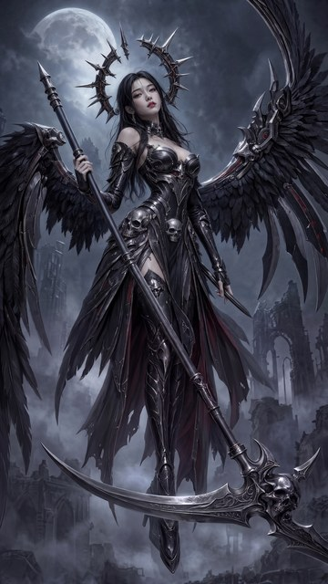
D′x · box blank · roll 1
FIXABLEAI recommendation: FIXABLE — blade contract met in full (single shallow ~50-degree arc, old rising sabre gone without ghosting, socket re-formed below the kept skull, all preserved islands seamless), but the restored left third of the band drops the gold's wing/cloak mass for fog+ruins, the cloak right of the figure is restyled, the head gains an unrequested right-side counter-spike, and the head's maroon inlay is lost.
Machine diagnostics
14 more detectors (20 total)
Blade contract fully met and islands seamless; left band re-composed (wing/cloak mass lost), head gains a new right spike.
full note
Scratch directory /tmp/r5aud-scythe-valkyrie-r5-w2-blankbox-comp-1/ holds every 1.4x-4x crop pair used here; all crops were cut from the candidate and the r3-w2-all-2 gold at identical coordinates and read back side by side. Above y=1450 the candidate is byte-identical to the gold (max channel delta 0), so grading was confined to the (0,1450)-(1536,2730) band. Inside the band the shared blade contract is met cleanly: one long blade leaves a freshly re-formed socket low on the kept skull, sweeps left in a single smooth shallow arc of roughly 50 degrees, and finishes at (189,2065) slightly above the socket in open fog with a clear gap to the left wing; the old rising sabre is gone with no ghosting or fill patch along its former path, and the haft, leg armour, boot, head core and the lower hand's dagger are all preserved and connect seamlessly across the y=1450 seam, which is invisible at 1.8x in three tiles. The deviations are all in the restored surroundings: the head gains an unrequested short counter-spike up-right of the skull at ~(1362,2094)-(1500,2256); the gold's large wing/cloak mass and hanging feather cluster in the left third (roughly (0,1900)-(450,2650)) are replaced by fog and ruins, lifting band mean luminance from 55.5 to 65.7; the cloak right of the figure is restyled from smooth maroon silk to black tatters, dropping saturated band pixels from 106232 to 79720; the head's maroon socket inlay renders plain grey; and the lower-left ruins and the boot's outer cloth panel are softer than the gold. Low-variance block fraction (1.6% versus the gold's 1.0%) confirms no blank or flat fill, and no guide markings, invented limbs or extra figures were found. Blade contract materially met with preservation-side deviations, hence FIXABLE.
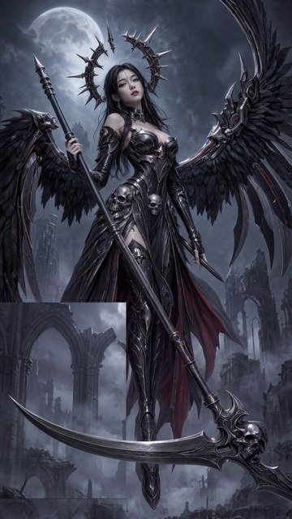
D′x · box blank · roll 2
REJECTAI recommendation: REJECT - a hard-edged rectangular patch (0,1590)-(662,2621) has replaced the entire lower-left wing, cloak drapes and feather fringes with pale, larger-scale gothic ruins; the blade itself meets the contract but the restore is unusable.
Machine diagnostics
11 more detectors (19 total)
Blade contract met, but a visible hard rectangle in the lower left erased the left wing and cloak and replaced them with invented ruins.
full note
Audited in the private scratch directory /tmp/r5aud-scythe-valkyrie-r5-w2-blankbox-comp-2/ (all crops written and read back there at 1.0-2.5x from the candidate and the identically-cropped r3-w2-all-2 gold). The scythe repair itself is good: the kept skull core matches the gold, a properly re-formed socket sits below it, and a single smooth shallow crescent sweeps left in front of the leg armour and boot with no doubling, no hook and no residue of the old rising sabre - the only blade quibble is that the tip at (48,2076) rises about 30-35 degrees rather than finishing near horizontal. The restore, however, fails outright: gradient analysis and crops show a hard-edged rectangle spanning (0,1590) to (662,2621), inside which the gold's entire lower-left wing feather mass, the black-and-red cloak drapes and the feather fringes beside the boot have been replaced by pale, lower-detail gothic arches drawn at a different scale, with all three seams plainly visible as straight lines. That is invented background plus removal of subject anatomy across roughly a quarter of the lower frame, so despite the compliant blade this candidate is rejected.

D′xg · box blank + in-blank guide · roll 1
KEEPER pending the da…Dimitri recommendation: KEEPER pending the dagger-removal pass — audit findings accepted as non-blocking
Machine diagnostics
9 more detectors (15 total)
Dimitri: "those audit findings don't seem like an issue to me either.
full note
Dimitri ratifies Jake's W2 selection. The crop audit's three severe findings inside the restored box — boots and leg armour losing plate detail, lower-left ruins flattening, and the filigree collar replaced by mechanical cogs — were put to him explicitly before promotion. He did not dispute the observations; he judged them unimportant at this wallpaper's viewing size. Under the pipeline's overturn rule that is NOT a verdict overturn: the audit was right about what is in the image, and a human simply values the artifact anyway, so the reasoning is recorded here and in rounds.md rather than in verdict-overturns.jsonl. The single outstanding change for r6 is removing the dagger from her lower hand.
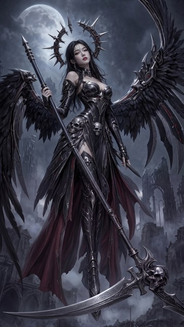
D′xg · box blank + in-blank guide · roll 2
FIXABLEAI recommendation: FIXABLE - blade contract met and no guide residue, but the restored box loses the boot detail and repaints the whole left half unlike the gold
Machine diagnostics
11 more detectors (17 total)
New blade meets the W2 contract and no guide marks survive, but the boot, its fringes and the left wing/cloak mass were repainted, not preserved.
full note
Audited in the private scratch directory /tmp/r5aud-scythe-valkyrie-r5-w2-blankboxg-comp-2/, where every 2x-ish crop of the candidate and the matching crop of the gold (scythe-valkyrie-r3-w2-all-2.jpg) were written and read back. An independent pixel diff confirms only the declared band y1451-2729 changed, and a whole-image colour scan - sanity-checked against injected marks - finds zero cyan or red pixels, so the blankboxg no-guide-marking check passes. The scythe itself is good: the old rising sabre is completely gone with no ghosting, the skull core is preserved, and one long blade now leaves a properly re-formed socket below the skull, sweeping left in a single smooth shallow arc of about 35-40 degrees to a tip near horizontal at (22,2600), separated from both wings by visible background and correctly passing in front of the leg armour. The failures are all in restoration fidelity inside the blanked box: the gold's detailed pointed boot at x735-855, y2440-2680 is replaced by a featureless glossy armour point and the fringe panel beside it is erased to fog; and the entire left half of the band, where the gold carried two broad black wing/cloak masses over x0-500, y1750-2500, has been repainted as thin feather strands, an enlarged smooth red cloak and invented ruins, with mid-left gradient energy dropping from 2.86 to 1.57. Softer, washed lower-left architecture and a cruciform restyle of the head collar are lesser deviations. Blade contract met, preservation contract materially breached.
Round closed — what happens next
One carried change, and a mechanism default for the round that runs it.
- r6: dagger-removal pass on the W2 keepernext round, runbook-first
Remove the dagger from her lower hand on r5-w2-blankboxg-comp-1, using guide-conditioned blanking as the first-choice mechanism. This SUPERSEDES the old deferred hand/dagger repair item — the dagger goes rather than being fixed. Needs its own approved runbook before any spend.
- Evaluation changes carried into r6when the next runbook is written
The guide-residue screen is retired as fundamentally flawed rather than re-thresholded; any successor must fire on the guide input and stay silent on a same-round non-guide control. A blind spec-versus-description lane cannot detect a no-op, so repair rounds need the gold-relative audit lane. Parallel crop auditors get per-artifact scratch directories.
- Still deferred, each needing its own roundunchanged
The re-sharpen finishing pass, the W2 wing-top crop repair, and the GPT Image 2 editor challenger behind its tooling gate.